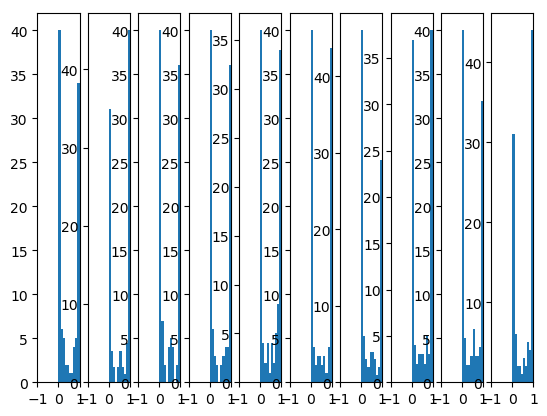
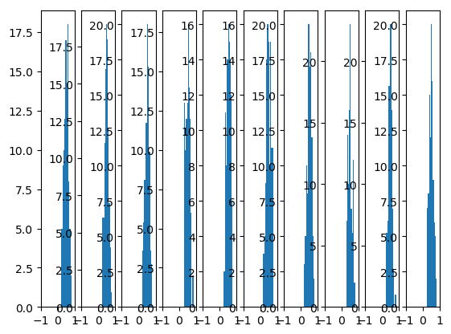
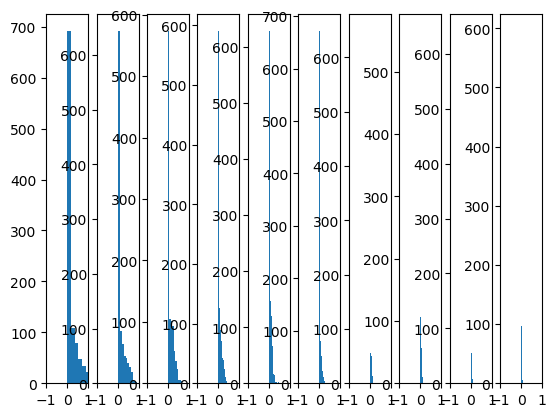
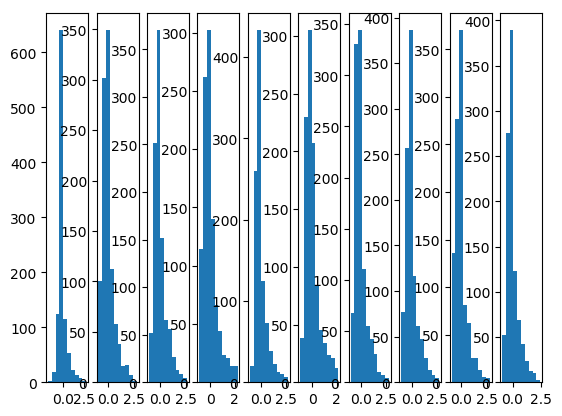

Weight Initialization
Table of Contents
1 Weight Initialization
1.1 初始化为相同的值
若权重被初始化为相同的值, 或者更具体的, 被初始化为相同的列, 而所有神经元会一直有 相同的输出, 导致神经元失去意义
#!/usr/bin/env python3 # -*- coding: utf-8 -*- # 2021-10-14 22:36 import torch N = 3 class Layer(torch.nn.Module): def __init__(self, in_features, out_features): super().__init__() self.w = torch.nn.Parameter( torch.randn(out_features).repeat(in_features, 1).transpose(0, 1) ) def forward(self, input): ret = torch.matmul(input, self.w) print("------") print(input) print(self.w) print(self.w.grad) print(ret) print("------") return ret net = torch.nn.Sequential() net.add_module("linear", Layer(N, N)) optimizer = torch.optim.SGD(net.parameters(), lr=1) criterion = torch.nn.MSELoss() x = torch.rand(1, N) for i in range(3): print("epoch: %d" % (i)) out = net(x) optimizer.zero_grad() loss = criterion(out, torch.ones((1, N))) loss.backward() optimizer.step()
epoch: 0
tensor() Parameter containing: tensor([[ 2.2574, 2.2574, 2.2574], [-1.2911, -1.2911, -1.2911], [-1.2469, -1.2469, -1.2469]], requires_grad=True) None tensor(, grad_fn=<MmBackward>)
epoch: 1
tensor() Parameter containing: tensor([[ 2.5595, 2.5595, 2.5595], [-1.1240, -1.1240, -1.1240], [-0.5409, -0.5409, -0.5409]], requires_grad=True) tensor([[-0.3021, -0.3021, -0.3021], [-0.1671, -0.1671, -0.1671], [-0.7060, -0.7060, -0.7060]]) tensor(, grad_fn=<MmBackward>)
epoch: 2
tensor() Parameter containing: tensor([[ 2.7254, 2.7254, 2.7254], [-1.0322, -1.0322, -1.0322], [-0.1532, -0.1532, -0.1532]], requires_grad=True) tensor([[-0.1659, -0.1659, -0.1659], [-0.0918, -0.0918, -0.0918], [-0.3876, -0.3876, -0.3876]]) tensor(, grad_fn=<MmBackward>)
由于初始权重每列均相同, 导致同一层的神经元的输出都相同, 若 label x 也相同, 则反 向传播时同一层神经元的梯度也相同
1.2 初始化为随机值
import numpy as np
import matplotlib.pyplot as plt
import torch
N = 100
plt.style.use("default")
plt.ylim(0, 40)
def init_weight(in_features, out_features):
return torch.nn.Parameter(torch.randn(in_features, out_features))
class Layer(torch.nn.Module):
def __init__(self, in_features, out_features, n):
super().__init__()
self.n = n
self.w = init_weight(in_features, out_features)
def forward(self, input):
ret = torch.matmul(input, self.w)
ret = torch.nn.functional.sigmoid(ret)
plt.subplot(1, 10, self.n)
plt.xlim(-1, 1)
plt.hist(ret.detach().numpy().reshape(-1))
return ret
def train():
net = torch.nn.Sequential()
for i in range(10):
net.add_module("linear%d" % (i), Layer(N, N, i + 1))
x = torch.rand(1, N)
net(x)
plt.show()
train()

当权重初始化为 randn (均值为 0, 方差为 1 的正态分布) 时, 各层的输出都在 0 或 1 附近, sigmoid 在 0 或 1 附近时梯度很小, 这时神经元称为饱和状态, 难以梯度下降.
sigmoid 饱和是因为计算 \(w^T x\) 时过大(例如大于 1).
我们假设最初的输入 x 是经过 scale 的值, 假设范围为 [-1,1], 我们的目标是通过调整 \(w\) 的分布, 使得 \(w^Tx\) 在 [-1,1] 范围内.
在上面的例子中, 我们使用 `randn` 初始化 \(w\), 它是一个 \(\mu=0, \delta=1\) 的标准正态分 布. 假设每一层网络输入的 x 均为 1, 则 \(w^Tx\) 为 100 个标准正态分布的叠加, 可以证 明这个输出是一个 \(\mu=0, \delta=\sqrt{100}\) 的正态分布, 非常容易取到远大于 1 的 值.
1.3 Xavier initialization
Xavier initialization 基本思想是通过调用 \(w\) 的值使得输入和输出的方差基本一致
def init_weight(in_features, out_features):
return torch.nn.Parameter(
torch.randn(in_features, out_features) / np.sqrt(in_features))
train()

1.4 He initialization
Xavier initialization 对 sigmoid 是有效的, 试试看对 relu 是否有效
def init_weight(in_features, out_features):
return torch.nn.Parameter(torch.randn(in_features, out_features) / np.sqrt(in_features))
class Layer(torch.nn.Module):
def __init__(self, in_features, out_features, n):
super().__init__()
self.n = n
self.w = init_weight(in_features, out_features)
def forward(self, input):
ret = torch.matmul(input, self.w)
ret = torch.nn.functional.relu(ret)
plt.subplot(1, 10, self.n)
plt.xlim(-1, 1)
plt.hist(ret.detach().numpy().reshape(-1))
return ret
train()

后面的神经元的输出趋向于 0.
虽然对于 relu 来说, 不论输出为多少, 梯度都固定为 1, 但由于反向传播时对 w 求偏导 时需要乘上对应的 x, 所以 x 趋向于 0 同样会使 w 的梯度很小.
He initialization的思想是：在 ReLU 网络中，假定每一层有一半的神经元被激活，另一 半为 0，所以，要保持方差不变，只需要在 Xavier 的基础上再除以 2
def init_weight(in_features, out_features):
return torch.nn.Parameter(
torch.randn(in_features, out_features) / np.sqrt(in_features / 2))
train()

1.6 不适当的权重初始化导致训练无法收敛
以一个三层的网络为例: \(y_1=w_1*x, y_2=w_2*y_1, l=mse(y_2,y)\), 且设置 \(w_1, w_2\) 均为 0
\(\frac{dl}{dw_2}=\frac{dl}{dy_2}*\frac{dy_2}{dw_2}=\frac{dl}{dy_2}*y_1\)
\(w_1=0 \implies y_1=0 \implies \frac{dl}{d{w_2}} = 0\)
\(\frac{dl}{dw_1}=\frac{dl}{dy_2}*\frac{dy_2}{dy_1}*\frac{dy_1}{dw_1}=\frac{dl}{dy_2}*w_2*\frac{dy_1}{dw_1}\)
\(w_2=0 \implies \frac{dl}{dw1} = 0\)
导致模型无法收敛
#!/usr/bin/env python3 # -*- coding: utf-8 -*- # 2021-10-14 22:36 import torch N = 3 class Layer(torch.nn.Module): def __init__(self, in_features, out_features, init_func): super().__init__() self.w = torch.nn.Parameter(torch.zeros(in_features, out_features)) # self.w = torch.nn.init.xavier_uniform_(self.w) self.w = init_func(self.w) def forward(self, input): ret = torch.matmul(input, self.w) print(f"------") print("input:", input) print("weight:", self.w) print("grad:", self.w.grad) print("output:", ret) print("------") return ret x = torch.rand(10, N) for init_func in [ # torch.nn.init.xavier_uniform_, # torch.nn.init.uniform_, lambda x: x, ]: print(init_func.__name__) net = torch.nn.Sequential() net.add_module("encoder", Layer(N, 10, init_func)) net.add_module("decoder", Layer(10, N, init_func)) optimizer = torch.optim.SGD(net.parameters(), lr=0.01) criterion = torch.nn.MSELoss() loss_val = None EPOCH = 2 for epoch in range(EPOCH): print(f"----------epoch: {epoch}----------") out = net(x) optimizer.zero_grad() loss = criterion(out, x) loss.backward() optimizer.step()
<lambda> -----–—epoch: 0-----–—
input: tensor([[0.5559, 0.7492, 0.7514], [0.6140, 0.7566, 0.6718], [0.1971, 0.1813, 0.5641], [0.1271, 0.4532, 0.4344], [0.4615, 0.1038, 0.7771], [0.5174, 0.9104, 0.3995], [0.9099, 0.5128, 0.0951], [0.8051, 0.4550, 0.7187], [0.6267, 0.9796, 0.4795], [0.0192, 0.1095, 0.6044]]) weight: Parameter containing: tensor([[0., 0., 0., 0., 0., 0., 0., 0., 0., 0.], [0., 0., 0., 0., 0., 0., 0., 0., 0., 0.], [0., 0., 0., 0., 0., 0., 0., 0., 0., 0.]], requires_grad=True) grad: None output: tensor([[0., 0., 0., 0., 0., 0., 0., 0., 0., 0.], [0., 0., 0., 0., 0., 0., 0., 0., 0., 0.], [0., 0., 0., 0., 0., 0., 0., 0., 0., 0.], [0., 0., 0., 0., 0., 0., 0., 0., 0., 0.], [0., 0., 0., 0., 0., 0., 0., 0., 0., 0.], [0., 0., 0., 0., 0., 0., 0., 0., 0., 0.], [0., 0., 0., 0., 0., 0., 0., 0., 0., 0.], [0., 0., 0., 0., 0., 0., 0., 0., 0., 0.], [0., 0., 0., 0., 0., 0., 0., 0., 0., 0.], [0., 0., 0., 0., 0., 0., 0., 0., 0., 0.]], grad_fn=<MmBackward>)
input: tensor([[0., 0., 0., 0., 0., 0., 0., 0., 0., 0.], [0., 0., 0., 0., 0., 0., 0., 0., 0., 0.], [0., 0., 0., 0., 0., 0., 0., 0., 0., 0.], [0., 0., 0., 0., 0., 0., 0., 0., 0., 0.], [0., 0., 0., 0., 0., 0., 0., 0., 0., 0.], [0., 0., 0., 0., 0., 0., 0., 0., 0., 0.], [0., 0., 0., 0., 0., 0., 0., 0., 0., 0.], [0., 0., 0., 0., 0., 0., 0., 0., 0., 0.], [0., 0., 0., 0., 0., 0., 0., 0., 0., 0.], [0., 0., 0., 0., 0., 0., 0., 0., 0., 0.]], grad_fn=<MmBackward>) weight: Parameter containing: tensor([[0., 0., 0.], [0., 0., 0.], [0., 0., 0.], [0., 0., 0.], [0., 0., 0.], [0., 0., 0.], [0., 0., 0.], [0., 0., 0.], [0., 0., 0.], [0., 0., 0.]], requires_grad=True) grad: None output: tensor([[0., 0., 0.], [0., 0., 0.], [0., 0., 0.], [0., 0., 0.], [0., 0., 0.], [0., 0., 0.], [0., 0., 0.], [0., 0., 0.], [0., 0., 0.], [0., 0., 0.]], grad_fn=<MmBackward>)
-----–—epoch: 1-----–—
input: tensor([[0.5559, 0.7492, 0.7514], [0.6140, 0.7566, 0.6718], [0.1971, 0.1813, 0.5641], [0.1271, 0.4532, 0.4344], [0.4615, 0.1038, 0.7771], [0.5174, 0.9104, 0.3995], [0.9099, 0.5128, 0.0951], [0.8051, 0.4550, 0.7187], [0.6267, 0.9796, 0.4795], [0.0192, 0.1095, 0.6044]]) weight: Parameter containing: tensor([[0., 0., 0., 0., 0., 0., 0., 0., 0., 0.], [0., 0., 0., 0., 0., 0., 0., 0., 0., 0.], [0., 0., 0., 0., 0., 0., 0., 0., 0., 0.]], requires_grad=True) grad: tensor([[0., 0., 0., 0., 0., 0., 0., 0., 0., 0.], [0., 0., 0., 0., 0., 0., 0., 0., 0., 0.], [0., 0., 0., 0., 0., 0., 0., 0., 0., 0.]]) output: tensor([[0., 0., 0., 0., 0., 0., 0., 0., 0., 0.], [0., 0., 0., 0., 0., 0., 0., 0., 0., 0.], [0., 0., 0., 0., 0., 0., 0., 0., 0., 0.], [0., 0., 0., 0., 0., 0., 0., 0., 0., 0.], [0., 0., 0., 0., 0., 0., 0., 0., 0., 0.], [0., 0., 0., 0., 0., 0., 0., 0., 0., 0.], [0., 0., 0., 0., 0., 0., 0., 0., 0., 0.], [0., 0., 0., 0., 0., 0., 0., 0., 0., 0.], [0., 0., 0., 0., 0., 0., 0., 0., 0., 0.], [0., 0., 0., 0., 0., 0., 0., 0., 0., 0.]], grad_fn=<MmBackward>)
input: tensor([[0., 0., 0., 0., 0., 0., 0., 0., 0., 0.], [0., 0., 0., 0., 0., 0., 0., 0., 0., 0.], [0., 0., 0., 0., 0., 0., 0., 0., 0., 0.], [0., 0., 0., 0., 0., 0., 0., 0., 0., 0.], [0., 0., 0., 0., 0., 0., 0., 0., 0., 0.], [0., 0., 0., 0., 0., 0., 0., 0., 0., 0.], [0., 0., 0., 0., 0., 0., 0., 0., 0., 0.], [0., 0., 0., 0., 0., 0., 0., 0., 0., 0.], [0., 0., 0., 0., 0., 0., 0., 0., 0., 0.], [0., 0., 0., 0., 0., 0., 0., 0., 0., 0.]], grad_fn=<MmBackward>) weight: Parameter containing: tensor([[0., 0., 0.], [0., 0., 0.], [0., 0., 0.], [0., 0., 0.], [0., 0., 0.], [0., 0., 0.], [0., 0., 0.], [0., 0., 0.], [0., 0., 0.], [0., 0., 0.]], requires_grad=True) grad: tensor([[0., 0., 0.], [0., 0., 0.], [0., 0., 0.], [0., 0., 0.], [0., 0., 0.], [0., 0., 0.], [0., 0., 0.], [0., 0., 0.], [0., 0., 0.], [0., 0., 0.]]) output: tensor([[0., 0., 0.], [0., 0., 0.], [0., 0., 0.], [0., 0., 0.], [0., 0., 0.], [0., 0., 0.], [0., 0., 0.], [0., 0., 0.], [0., 0., 0.], [0., 0., 0.]], grad_fn=<MmBackward>)
1.6.1 加上 bias
\(y_1=w_1*x+b_1, y_2=w_2*y_1+b_2, l=mse(y2,y)\)
\(\frac{dl}{db_2}=2*(y_2-y)\)
\(\frac{dl}{db_1}=2*(y_2-y)*w_2\)
所以 \(b_2\) 可以被更新, 但其它参数还是会维持为 0 不变, 因为它们的梯度不依赖 \(b_2\) 或 \(y_2\) 的值
#!/usr/bin/env python3 # -*- coding: utf-8 -*- # 2021-10-14 22:36 import torch N = 3 class Layer(torch.nn.Module): def __init__(self, in_features, out_features): super().__init__() self.w = torch.nn.Parameter(torch.zeros(in_features, out_features)) self.b = torch.nn.Parameter(torch.zeros(out_features)) def forward(self, input): ret = torch.matmul(input, self.w) + self.b print(f"------") print("input:", input) print("weight:", self.w) print("bias:", self.b) print("grad:", self.w.grad) print("bias_grad:", self.b.grad) print("output:", ret) print("------") return ret x = torch.rand(10, N) net = torch.nn.Sequential() net.add_module("encoder", Layer(N, 10)) net.add_module("decoder", Layer(10, N)) optimizer = torch.optim.SGD(net.parameters(), lr=0.01) criterion = torch.nn.MSELoss() loss_val = None EPOCH = 2 for epoch in range(EPOCH): print(f"----------epoch: {epoch}----------") out = net(x) optimizer.zero_grad() loss = criterion(out, x) loss.backward() optimizer.step()
-----–—epoch: 0-----–—
input: tensor([[0.0892, 0.0043, 0.1385], [0.5969, 0.6326, 0.0483], [0.6149, 0.3503, 0.9675], [0.8038, 0.6002, 0.6653], [0.7709, 0.9145, 0.9097], [0.3827, 0.4187, 0.3746], [0.4997, 0.8725, 0.9211], [0.3268, 0.2441, 0.0907], [0.2871, 0.0215, 0.1810], [0.0679, 0.7250, 0.1056]]) weight: Parameter containing: tensor([[0., 0., 0., 0., 0., 0., 0., 0., 0., 0.], [0., 0., 0., 0., 0., 0., 0., 0., 0., 0.], [0., 0., 0., 0., 0., 0., 0., 0., 0., 0.]], requires_grad=True) bias: Parameter containing: tensor([0., 0., 0., 0., 0., 0., 0., 0., 0., 0.], requires_grad=True) grad: None bias_grad: None output: tensor([[0., 0., 0., 0., 0., 0., 0., 0., 0., 0.], [0., 0., 0., 0., 0., 0., 0., 0., 0., 0.], [0., 0., 0., 0., 0., 0., 0., 0., 0., 0.], [0., 0., 0., 0., 0., 0., 0., 0., 0., 0.], [0., 0., 0., 0., 0., 0., 0., 0., 0., 0.], [0., 0., 0., 0., 0., 0., 0., 0., 0., 0.], [0., 0., 0., 0., 0., 0., 0., 0., 0., 0.], [0., 0., 0., 0., 0., 0., 0., 0., 0., 0.], [0., 0., 0., 0., 0., 0., 0., 0., 0., 0.], [0., 0., 0., 0., 0., 0., 0., 0., 0., 0.]], grad_fn=<AddBackward0>)
input: tensor([[0., 0., 0., 0., 0., 0., 0., 0., 0., 0.], [0., 0., 0., 0., 0., 0., 0., 0., 0., 0.], [0., 0., 0., 0., 0., 0., 0., 0., 0., 0.], [0., 0., 0., 0., 0., 0., 0., 0., 0., 0.], [0., 0., 0., 0., 0., 0., 0., 0., 0., 0.], [0., 0., 0., 0., 0., 0., 0., 0., 0., 0.], [0., 0., 0., 0., 0., 0., 0., 0., 0., 0.], [0., 0., 0., 0., 0., 0., 0., 0., 0., 0.], [0., 0., 0., 0., 0., 0., 0., 0., 0., 0.], [0., 0., 0., 0., 0., 0., 0., 0., 0., 0.]], grad_fn=<AddBackward0>) weight: Parameter containing: tensor([[0., 0., 0.], [0., 0., 0.], [0., 0., 0.], [0., 0., 0.], [0., 0., 0.], [0., 0., 0.], [0., 0., 0.], [0., 0., 0.], [0., 0., 0.], [0., 0., 0.]], requires_grad=True) bias: Parameter containing: tensor([0., 0., 0.], requires_grad=True) grad: None bias_grad: None output: tensor([[0., 0., 0.], [0., 0., 0.], [0., 0., 0.], [0., 0., 0.], [0., 0., 0.], [0., 0., 0.], [0., 0., 0.], [0., 0., 0.], [0., 0., 0.], [0., 0., 0.]], grad_fn=<AddBackward0>)
-----–—epoch: 1-----–—
input: tensor([[0.0892, 0.0043, 0.1385], [0.5969, 0.6326, 0.0483], [0.6149, 0.3503, 0.9675], [0.8038, 0.6002, 0.6653], [0.7709, 0.9145, 0.9097], [0.3827, 0.4187, 0.3746], [0.4997, 0.8725, 0.9211], [0.3268, 0.2441, 0.0907], [0.2871, 0.0215, 0.1810], [0.0679, 0.7250, 0.1056]]) weight: Parameter containing: tensor([[0., 0., 0., 0., 0., 0., 0., 0., 0., 0.], [0., 0., 0., 0., 0., 0., 0., 0., 0., 0.], [0., 0., 0., 0., 0., 0., 0., 0., 0., 0.]], requires_grad=True) bias: Parameter containing: tensor([0., 0., 0., 0., 0., 0., 0., 0., 0., 0.], requires_grad=True) grad: tensor([[0., 0., 0., 0., 0., 0., 0., 0., 0., 0.], [0., 0., 0., 0., 0., 0., 0., 0., 0., 0.], [0., 0., 0., 0., 0., 0., 0., 0., 0., 0.]]) bias_grad: tensor([0., 0., 0., 0., 0., 0., 0., 0., 0., 0.]) output: tensor([[0., 0., 0., 0., 0., 0., 0., 0., 0., 0.], [0., 0., 0., 0., 0., 0., 0., 0., 0., 0.], [0., 0., 0., 0., 0., 0., 0., 0., 0., 0.], [0., 0., 0., 0., 0., 0., 0., 0., 0., 0.], [0., 0., 0., 0., 0., 0., 0., 0., 0., 0.], [0., 0., 0., 0., 0., 0., 0., 0., 0., 0.], [0., 0., 0., 0., 0., 0., 0., 0., 0., 0.], [0., 0., 0., 0., 0., 0., 0., 0., 0., 0.], [0., 0., 0., 0., 0., 0., 0., 0., 0., 0.], [0., 0., 0., 0., 0., 0., 0., 0., 0., 0.]], grad_fn=<AddBackward0>)
input: tensor([[0., 0., 0., 0., 0., 0., 0., 0., 0., 0.], [0., 0., 0., 0., 0., 0., 0., 0., 0., 0.], [0., 0., 0., 0., 0., 0., 0., 0., 0., 0.], [0., 0., 0., 0., 0., 0., 0., 0., 0., 0.], [0., 0., 0., 0., 0., 0., 0., 0., 0., 0.], [0., 0., 0., 0., 0., 0., 0., 0., 0., 0.], [0., 0., 0., 0., 0., 0., 0., 0., 0., 0.], [0., 0., 0., 0., 0., 0., 0., 0., 0., 0.], [0., 0., 0., 0., 0., 0., 0., 0., 0., 0.], [0., 0., 0., 0., 0., 0., 0., 0., 0., 0.]], grad_fn=<AddBackward0>) weight: Parameter containing: tensor([[0., 0., 0.], [0., 0., 0.], [0., 0., 0.], [0., 0., 0.], [0., 0., 0.], [0., 0., 0.], [0., 0., 0.], [0., 0., 0.], [0., 0., 0.], [0., 0., 0.]], requires_grad=True) bias: Parameter containing: tensor([0.0030, 0.0032, 0.0029], requires_grad=True) grad: tensor([[0., 0., 0.], [0., 0., 0.], [0., 0., 0.], [0., 0., 0.], [0., 0., 0.], [0., 0., 0.], [0., 0., 0.], [0., 0., 0.], [0., 0., 0.], [0., 0., 0.]]) bias_grad: tensor([-0.2960, -0.3189, -0.2935]) output: tensor([[0.0030, 0.0032, 0.0029], [0.0030, 0.0032, 0.0029], [0.0030, 0.0032, 0.0029], [0.0030, 0.0032, 0.0029], [0.0030, 0.0032, 0.0029], [0.0030, 0.0032, 0.0029], [0.0030, 0.0032, 0.0029], [0.0030, 0.0032, 0.0029], [0.0030, 0.0032, 0.0029], [0.0030, 0.0032, 0.0029]], grad_fn=<AddBackward0>)
1.6.2 加上 activation
加上 relu 后对每一层的梯度和输出 (0) 都没有影响, 所以不会有什么改变
加上 sigmoid 后对每一层的输出 (0) 都会有影响, 所以各个参数的梯度会发生改变
#!/usr/bin/env python3 # -*- coding: utf-8 -*- # 2021-10-14 22:36 import torch N = 3 class Layer(torch.nn.Module): def __init__(self, in_features, out_features): super().__init__() self.w = torch.nn.Parameter(torch.zeros(in_features, out_features)) self.b = torch.nn.Parameter(torch.zeros(out_features)) def forward(self, input): ret = torch.matmul(input, self.w) + self.b ret = torch.relu(ret) print(f"------") print("input:", input) print("weight:", self.w) print("bias:", self.b) print("grad:", self.w.grad) print("bias_grad:", self.b.grad) print("output:", ret) print("------") return ret x = torch.rand(10, N) net = torch.nn.Sequential() net.add_module("encoder", Layer(N, 10)) net.add_module("decoder", Layer(10, N)) optimizer = torch.optim.SGD(net.parameters(), lr=0.01) criterion = torch.nn.MSELoss() loss_val = None EPOCH = 2 for epoch in range(EPOCH): print(f"----------epoch: {epoch}----------") out = net(x) optimizer.zero_grad() loss = criterion(out, x) loss.backward() optimizer.step()
-----–—epoch: 0-----–—
input: tensor([[0.7440, 0.9623, 0.0264], [0.1071, 0.7099, 0.7681], [0.0640, 0.9640, 0.5351], [0.5744, 0.1441, 0.1794], [0.9339, 0.7973, 0.6490], [0.3939, 0.9950, 0.1150], [0.6462, 0.4156, 0.9414], [0.1071, 0.8234, 0.0591], [0.8225, 0.9480, 0.4412], [0.7329, 0.7617, 0.5860]]) weight: Parameter containing: tensor([[0., 0., 0., 0., 0., 0., 0., 0., 0., 0.], [0., 0., 0., 0., 0., 0., 0., 0., 0., 0.], [0., 0., 0., 0., 0., 0., 0., 0., 0., 0.]], requires_grad=True) bias: Parameter containing: tensor([0., 0., 0., 0., 0., 0., 0., 0., 0., 0.], requires_grad=True) grad: None bias_grad: None output: tensor([[0., 0., 0., 0., 0., 0., 0., 0., 0., 0.], [0., 0., 0., 0., 0., 0., 0., 0., 0., 0.], [0., 0., 0., 0., 0., 0., 0., 0., 0., 0.], [0., 0., 0., 0., 0., 0., 0., 0., 0., 0.], [0., 0., 0., 0., 0., 0., 0., 0., 0., 0.], [0., 0., 0., 0., 0., 0., 0., 0., 0., 0.], [0., 0., 0., 0., 0., 0., 0., 0., 0., 0.], [0., 0., 0., 0., 0., 0., 0., 0., 0., 0.], [0., 0., 0., 0., 0., 0., 0., 0., 0., 0.], [0., 0., 0., 0., 0., 0., 0., 0., 0., 0.]], grad_fn=<ReluBackward0>)
input: tensor([[0., 0., 0., 0., 0., 0., 0., 0., 0., 0.], [0., 0., 0., 0., 0., 0., 0., 0., 0., 0.], [0., 0., 0., 0., 0., 0., 0., 0., 0., 0.], [0., 0., 0., 0., 0., 0., 0., 0., 0., 0.], [0., 0., 0., 0., 0., 0., 0., 0., 0., 0.], [0., 0., 0., 0., 0., 0., 0., 0., 0., 0.], [0., 0., 0., 0., 0., 0., 0., 0., 0., 0.], [0., 0., 0., 0., 0., 0., 0., 0., 0., 0.], [0., 0., 0., 0., 0., 0., 0., 0., 0., 0.], [0., 0., 0., 0., 0., 0., 0., 0., 0., 0.]], grad_fn=<ReluBackward0>) weight: Parameter containing: tensor([[0., 0., 0.], [0., 0., 0.], [0., 0., 0.], [0., 0., 0.], [0., 0., 0.], [0., 0., 0.], [0., 0., 0.], [0., 0., 0.], [0., 0., 0.], [0., 0., 0.]], requires_grad=True) bias: Parameter containing: tensor([0., 0., 0.], requires_grad=True) grad: None bias_grad: None output: tensor([[0., 0., 0.], [0., 0., 0.], [0., 0., 0.], [0., 0., 0.], [0., 0., 0.], [0., 0., 0.], [0., 0., 0.], [0., 0., 0.], [0., 0., 0.], [0., 0., 0.]], grad_fn=<ReluBackward0>)
-----–—epoch: 1-----–—
input: tensor([[0.7440, 0.9623, 0.0264], [0.1071, 0.7099, 0.7681], [0.0640, 0.9640, 0.5351], [0.5744, 0.1441, 0.1794], [0.9339, 0.7973, 0.6490], [0.3939, 0.9950, 0.1150], [0.6462, 0.4156, 0.9414], [0.1071, 0.8234, 0.0591], [0.8225, 0.9480, 0.4412], [0.7329, 0.7617, 0.5860]]) weight: Parameter containing: tensor([[0., 0., 0., 0., 0., 0., 0., 0., 0., 0.], [0., 0., 0., 0., 0., 0., 0., 0., 0., 0.], [0., 0., 0., 0., 0., 0., 0., 0., 0., 0.]], requires_grad=True) bias: Parameter containing: tensor([0., 0., 0., 0., 0., 0., 0., 0., 0., 0.], requires_grad=True) grad: tensor([[0., 0., 0., 0., 0., 0., 0., 0., 0., 0.], [0., 0., 0., 0., 0., 0., 0., 0., 0., 0.], [0., 0., 0., 0., 0., 0., 0., 0., 0., 0.]]) bias_grad: tensor([0., 0., 0., 0., 0., 0., 0., 0., 0., 0.]) output: tensor([[0., 0., 0., 0., 0., 0., 0., 0., 0., 0.], [0., 0., 0., 0., 0., 0., 0., 0., 0., 0.], [0., 0., 0., 0., 0., 0., 0., 0., 0., 0.], [0., 0., 0., 0., 0., 0., 0., 0., 0., 0.], [0., 0., 0., 0., 0., 0., 0., 0., 0., 0.], [0., 0., 0., 0., 0., 0., 0., 0., 0., 0.], [0., 0., 0., 0., 0., 0., 0., 0., 0., 0.], [0., 0., 0., 0., 0., 0., 0., 0., 0., 0.], [0., 0., 0., 0., 0., 0., 0., 0., 0., 0.], [0., 0., 0., 0., 0., 0., 0., 0., 0., 0.]], grad_fn=<ReluBackward0>)
input: tensor([[0., 0., 0., 0., 0., 0., 0., 0., 0., 0.], [0., 0., 0., 0., 0., 0., 0., 0., 0., 0.], [0., 0., 0., 0., 0., 0., 0., 0., 0., 0.], [0., 0., 0., 0., 0., 0., 0., 0., 0., 0.], [0., 0., 0., 0., 0., 0., 0., 0., 0., 0.], [0., 0., 0., 0., 0., 0., 0., 0., 0., 0.], [0., 0., 0., 0., 0., 0., 0., 0., 0., 0.], [0., 0., 0., 0., 0., 0., 0., 0., 0., 0.], [0., 0., 0., 0., 0., 0., 0., 0., 0., 0.], [0., 0., 0., 0., 0., 0., 0., 0., 0., 0.]], grad_fn=<ReluBackward0>) weight: Parameter containing: tensor([[0., 0., 0.], [0., 0., 0.], [0., 0., 0.], [0., 0., 0.], [0., 0., 0.], [0., 0., 0.], [0., 0., 0.], [0., 0., 0.], [0., 0., 0.], [0., 0., 0.]], requires_grad=True) bias: Parameter containing: tensor([0., 0., 0.], requires_grad=True) grad: tensor([[0., 0., 0.], [0., 0., 0.], [0., 0., 0.], [0., 0., 0.], [0., 0., 0.], [0., 0., 0.], [0., 0., 0.], [0., 0., 0.], [0., 0., 0.], [0., 0., 0.]]) bias_grad: tensor([0., 0., 0.]) output: tensor([[0., 0., 0.], [0., 0., 0.], [0., 0., 0.], [0., 0., 0.], [0., 0., 0.], [0., 0., 0.], [0., 0., 0.], [0., 0., 0.], [0., 0., 0.], [0., 0., 0.]], grad_fn=<ReluBackward0>)